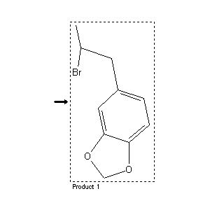

|  |
| FA | RX(1); FLST(1); RX(1) |
Reaction (1 of 1)
| Reaction ID | 5446421 |
| Product BRN | 150219 |
| Product | 5-(2-bromo-propyl)-benzo[1,3]dioxole |
| No. of Reaction Details | 1 |
Reaction Details (1 of 1)
| Reaction Classification | Preparation (half reaction) |
| Citation Pointer | 3384068; Journal; Muszynski; APPHAX; Acta Pol.Pharm.; 18; 1961; 471,474;5111350; Journal; Biniecki et al.; APPHAX; Acta Pol.Pharm.; 19; 1962; 257,260; Chem.Abstr.; 60; 4147; 1964; |
Reference (1 of 2)
| Citation Number | 3384068 |
| Document Type | Journal |
| Authors | Muszynski |
| CODEN | APPHAX |
| Journal Title | Acta Pol.Pharm. |
| (Series) Volume | 18 |
| Publication Year | 1961 |
| Page | 471,474 |
Reference (2 of 2)
| Citation Number | 5111350 |
| Document Type | Journal |
| Authors | Biniecki et al. |
| CODEN | APPHAX |
| Journal Title | Acta Pol.Pharm. |
| Journal/Review Without CODEN | Chem.Abstr. |
| (Series) Volume | 19; 60 |
| Number | 4147 |
| Publication Year | 1962; 1964 |
| Page | 257,260 |